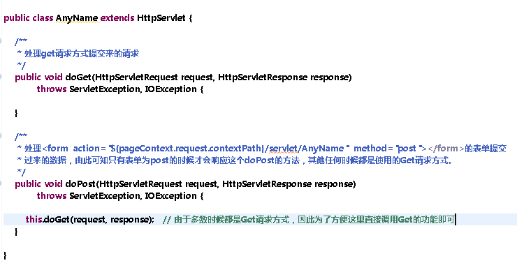

第二步
第三步
配置Servlet————在web.xml文件中进行servlet的配置，如果在第三步中勾选了“Generate/Map web.xml file”就会自动生成如下信息
创建出来的servlet类形式如下

在浏览器中根据路径即可访问到指定servlet
例如 http://www.NB.com/web应用名/url-pattern中配置的虚拟路径
就会被servlet容器将这次请求交由对应的servlet处理。
通过servlet容器（Web应用服务器）提交过来的两个参数request和response类完成对浏览器请求数据时所提交过来的数据的获取以及撰写响应部分的内容，这一过程叫叫做JavaWeb编程。具体的关于请求和响应的关系请参考 HTTP协议部分。
HttpServletRequest常用的操作
（0）设置将从浏览器传递过来的二进制的实体内容数据解码的编码类型—— request.set
（1）获取请求参数——request.getParameter("HTML页面表单中子标签的name")
（2）向请求转发链域写入数据—— request.setAttribute("属性名",obj)
（3）从请求转发链域获取数据—— request.getAttribute("属性名")
（4）获取服务器端会话对象—— request.getSession()
(5) 获取Web应用对象—— request.getServletContext()
(6) 请求转发—— request.getRequestDispatcher("url").forward(request,response);
（7）其他还有很多，具体请查阅JavaEE的API文档
HttpServletResponse常用的操作
（1）获取字符输出流 response.getWriter().write("要输出到HTML页面上的字符串信息")
（2）获取字节输出流 response.getOutputStream().write();
（3）请求重定向 response.SendRedirect("path");
（4）设置浏览器解码响应正文编码格式和服务器编码response缓冲流数据到HTTP协议响应部分正文的编码 response.setContentType("text/html;charset=utf-8");
（5） 只设置服务器端编码response缓冲区流数据到响应正文的码表 response.setCharacterEncoding("utf-8")
（6） 设置各种响应头 response.setHeader("Content-Type","text/html;charset=utf-8"); // 设置浏览器以何种方式处理此次响应，以及以什么码表解码响应正文
response.setHeader("refresh","2;url=xxxxxx"); // 多杀秒后自动跳转
（7） 其他还有一些，具体请查阅JavaEE的API文档